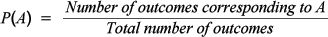

Definition of probability
The classical definition of probability initially arose in relation to games of chance but is relevant to all random situations in which there are several different possible outcomes but each of these outcomes is equally likely. The probability of any event, A, is the proportion of outcomes that correspond to the event.

Household size in Mauritius
The bar chart below shows the sizes of all households in Mauritius in its 2000 census. Dual axes are shown to display both the number of households and proportion of each size.
If a single household is randomly selected in Mauritius, the probability that it will be of any particular size equals the population proportion of households of that size in the census.
Click on the bars to read off the probabilities.